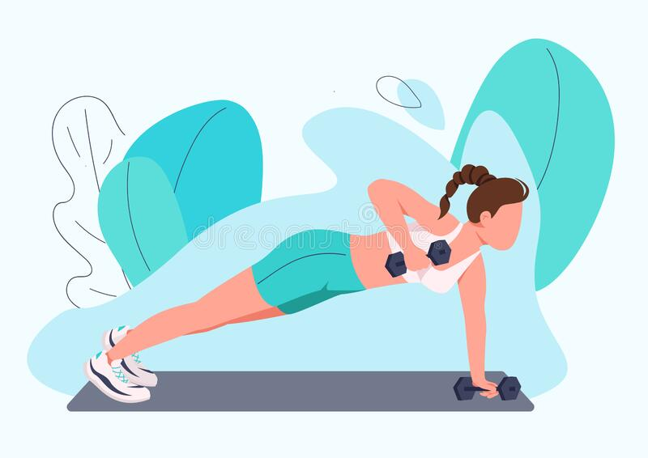

Being healthy does not only mean to have a great body with abs.Health is defined as the state of being free from illness or injury.We can say we are healthy when we are not getting exhausted that fast.If we are getting tired too soon then we need to think about it.
Step 1: Motivation

|
Think why do you want to do it.Motivation plays a very important role.
You need to ask yourself these questions. |
Step 2: Healthy Food

|
Healthy food is not tasty is a myth.You can follow good blogs and find new recipes everyday.Home made food is the best healthy food. |
Step 3: Physical activity
|  |
Any kind of physical activity say:
will help you to reach the goal of healthy lifestyle sooner.Just stay active,be it in any way. |
||